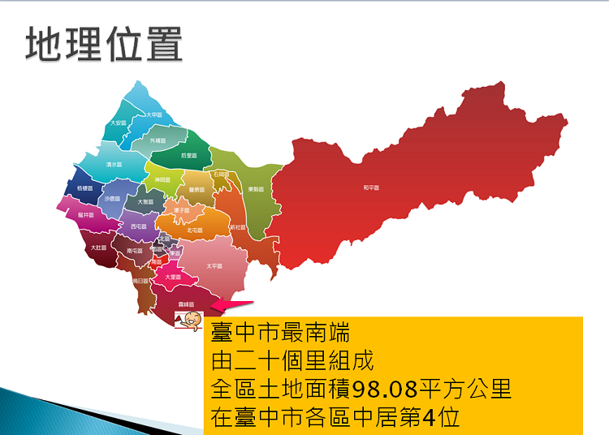
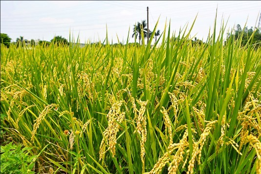

認識霧峰
霧峰區位於臺灣臺中市最南端，東與南投縣國姓鄉相連，西與烏日區比鄰，北與太平區、大里區接境，南與南投縣草屯鎮隔烏溪相望。霧峰區地形東西長14.83公里，南北長8.83公里，全區土地面積98.08平方公里，在臺中市各區中居第4位。東半部屬山坡地帶，西半部為河川平原，海拔約在40～100 公尺之間，地勢東高西低，水田面積約占全區的四分之一。


霧峰舊名「阿罩霧」，民國九年易名「霧峰」。霧峰區在漢人未入墾前為史前豬槽湖文化人、高山泰雅族梅加獵社群及洪雅平埔族阿里坤支族盤據區域。乾隆二十九年依據余文儀《續修臺灣府志》所記載，本區阿罩霧莊初作「貓羅新莊」。光緒十三年臺灣設省，以台中地區為臺灣府附郭首縣為臺灣縣，本區改隸臺灣縣貓羅堡。